Integrated Arthroscopy Platform
CrossFire 2 + CrossFlow + Formula + SERFAS + CrossBlade — 하나의 풋스위치와 하나의 설정 프로필로 연결되는 Resection · Ablation · Fluid 시스템

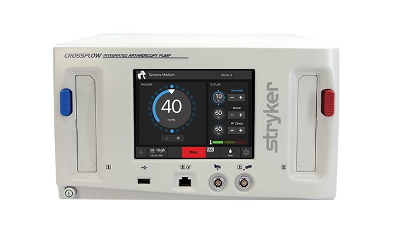
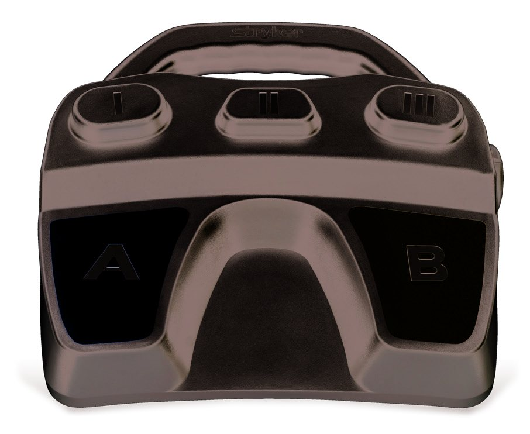
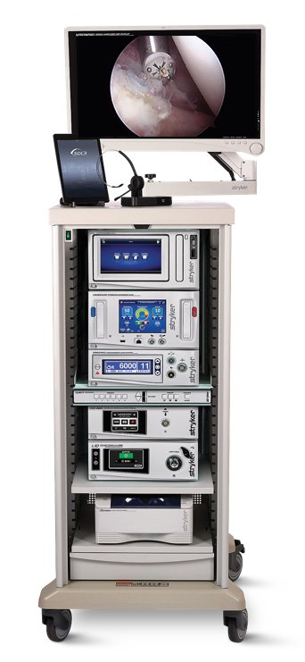
Formula · CrossBlade
Shaver Cutters & Burs — Window style · 직경 · 각도(Angled)·Hip Length·Small Joint까지 한 라인업.
SERFAS Energy
Suction / Non-suction RF Probes — Plasma 기반 연부조직 절제·응고.
CrossFlow
Inflow · Outflow 압력/유량 관리, ReconiSense로 Shaver·RF와 흡인(suction) 연동.
CrossFire 2 · Resection & RF Console
Two-in-one — Shaver와 RF를 하나의 콘솔·하나의 풋스위치로
- Two-in-one console: Formula Shaver · SERFAS RF · TPS Small Joint Handpiece를 한 콘솔에서 구동 (콘솔 연결 포트 3개: Formula Shaver / SERFAS / Footswitch)
- Two-in-one Footswitch: Shaver와 RF를 하나의 풋스위치로 제어, 별도 풋페달 불필요 → OR 공간 절약
- Fully customizable: Console Customizer App(iPad)으로 술자별 Profile 저장 — 케이스마다 재설정 불필요
- CrossFlow 연동: Handpiece/Footswitch 버튼 하나를 Wash 등 CrossFlow 기능에 할당
- Arc-to-scope detection: RF 사용 시 전극면에서 스코프 끝으로 튀는 arc(scope burn)를 감지·제한하도록 설계 (Stryker in-house test 기준)
- Shaver 속도: FWD 12,000 / REV 9,000 / OSC 3,000 RPM (Angled 6,000)

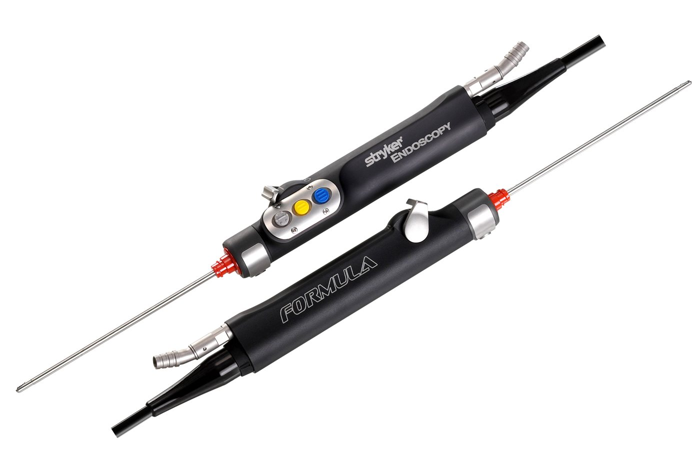
Programmable Footswitch Buttons
| Shaver | CrossFlow | 기타 |
|---|---|---|
| FWD↔REV · FWD/REV↔OSC · High↔Low · Increase/Decrease Speed · Jog | Wash · Clear · Drain · Vacuum · Increase/Decrease Flow Limit · Increase/Decrease Suction | Hot Swap · Disable (※ Button II는 SERFAS ↔ Shaver 전환 전용) |
구성 · Part Numbers
| Part No. | Description |
|---|---|
| 0475-100-000 | CrossFire 2 Console |
| 0475-000-100 | CrossFire Integrated Footswitch |
| 0375-708-500 | Formula 180 Shaver Handpiece (with buttons) |
| 0375-704-400 | Formula Shaver Handpiece (with buttons) |
| 0375-701-500 | Formula Shaver Handpiece (without buttons) |
| 0375-601-500 | TPS Small Joint Shaver Handpiece |
Part number는 Stryker Integrated Arthroscopy Platform 브로셔(Rev B) 및 Complete Arthroscopy Solution 자료 기준 — 주문 전 최신 카탈로그 확인.
CrossFlow · Integrated Arthroscopy Pump
Inflow · Outflow를 한 대로 — Shaver/RF와 연동하는 ReconiSense Technology
- Easy setup: Cassette 삽입 → Surgeon profile 선택 → Prime
- ReconiSense Technology: Stryker Shaver·RF의 흡인(suction)을 각 Disposable에 맞게 조정하며 연동
- Customizable: 관절 압력·유량, Shaver/RF 설정, 화면 표시, Footswitch/Hand control 설정을 Surgeon profile로 저장
- On-Demand Assistance (ODA): 기능별 사용법 안내 내장
| Function | 설명 |
|---|---|
| Wash | 압력·유량을 빠르게 높여 debris 제거, 출혈 조절, 시야 개선 |
| Clear | flow만 증가(압력은 유지)하여 debris를 신속히 flush |
| Drain | 30초간(또는 중지 시까지) 수술 부위 수액 제거 |
| Vacuum | Shaver 작동 없이 loose tissue·debris·수액을 흡인 |

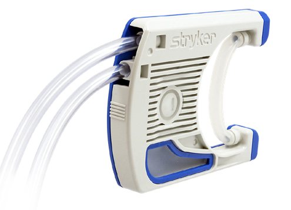


| Part No. | Description |
|---|---|
| 0450-000-000 | CrossFlow Integrated Arthroscopy Pump |
| 0450-000-500 | CrossFlow Footpedal |
| 0450-000-100 / 200 | CrossFlow Inflow / Outflow Cassette Tubing (Box of 10) |
| 0450-000-300 | CrossFlow Integrated Cassette Tubing (Box of 6) |
| 0450-000-115 / 125 | Day-Use Tubing / Patient-Use Tubing (Box of 10) |
SERFAS Energy · RF Ablation Probes
Plasma 기반 연부조직 Ablation · Coagulation — Suction / Non-suction, Hip XL까지
작동 원리. 전극 주변 생리식염수가 끓으며 microbubble → vapor layer → Plasma pocket이 형성되고, 고에너지 이온이 조직을 기화(Ablation)시킵니다. 따라서 식염수 같은 전도성 매질(Conductive medium)이 필요합니다.
- 90-S Cruise / 90-S Accelerator (4.0mm): 더 단단한 Distal tip(파손 저항), 텅스텐 전극면(laser-cut), 얇아진 전극 → 낮은 발열 대비 높은 Mass ablation rate
- Suction · Non-suction 프로브 모두 제공 / Non-suction은 probe bender로 최대 45° 굽힘 가능 (구형 브로셔 기준)
- 프로브 일체형 케이블, 버튼으로 CUT·COAG 및 출력 조절
- SERFAS XL (Hip): Working length 180mm — Hook(Hip capsulotomy), 50-S(femoral head 주변 접근), 90-S(범용)


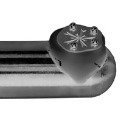
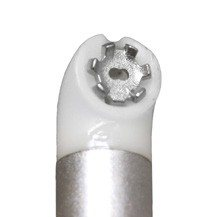
SERFAS Probe Portfolio · Part Numbers
| Part No. | Probe | Part No. | Probe |
|---|---|---|---|
| 279-401-200 | 90-S Cruise | 279-351-250 | 50-S |
| 279-351-400 | 90-S Accelerator | 279-351-230 | 30-S |
| 279-401-100 | 90-S Max | 279-251-101 | Aardvark |
| 279-351-100 | 90-S | 279-350-201 / 301 / 401 / 501 | Non-suction: Lateral · Contour · Direct · Hook |
Suction 프로브(90-S 계열 · 50-S · 30-S · Aardvark)와 Non-suction 프로브의 권장 CUT/COAG 설정은 Stryker 브로셔의 Recommended Settings 표를 참고하세요. 실제 출력은 술자 판단·IFU에 따라 조정합니다.
Formula Series · Shaver Cutters & Burs
Stryker의 가장 폭넓은 Shaver·Bur 라인 — RFID Chip으로 각 Disposable에 최적 설정 자동 적용

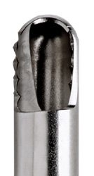

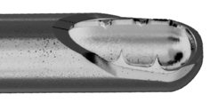
Aggressive Plus
범용 Cutter. 내부 톱니(serrated inner)와 매끈한 외부 하우징으로 진입 시 연골 스침을 줄이고 필요 시 공격적 절제. Knee & Shoulder: Meniscus · Cartilage · Synovium
Tomcat
내·외부 모두 톱니 — 연부조직 신속 절제. Knee: ACL 및 ACL stump resection
Resector
비톱니(non-serrated) 연부조직·골 겸용. Knee & Shoulder: Meniscus · Cartilage · Synovium · Bone, Sub-acromial decompression, Notchplasty
Cutters (5/box) · Part Numbers
| Cutter | 3.5 mm | 4.0 mm | 5.0 mm | 5.5 mm |
|---|---|---|---|---|
| Resector | 375-532-000 | 375-542-000 | 375-552-000 | 375-562-000 |
| Aggressive Plus | 375-534-000 | 375-544-000 | 375-554-000 | 375-564-000 |
| Tomcat | 375-535-000 | 375-545-000 | 375-555-000 | 375-565-000 |
그 외 4.0mm: Scalloped 375-546-000 · Cougar End 375-541-000 · End Cutter 375-747-000 · Double Bite 375-543-000 · Slotted Whisker 375-548-000 · Whisker 375-549-000.
Angled (6,000 RPM): Resector 380-542-150 (4.5) · Aggressive Plus 380-544-100/-150, 380-554-100 (4.0/4.5/5.0) · Tomcat 380-545-100/-150, 380-555-100.
Burs (5/box)
| Bur | 3.5 | 4.0 | 5.0 | 5.5 |
|---|---|---|---|---|
| Standard 12-Flute Barrel | — | 375-941-012 | 375-951-112 | 375-951-012 |
| Standard 12-Flute Round | — | 375-940-012 | 375-950-112 | 375-950-012 |
| Aggressive 6-Flute Barrel | — | 375-941-000 | 375-951-100 | 375-951-000 |
| Aggressive 6-Flute Round | 375-930-000 | 375-940-000 | 375-950-100 | 375-950-000 |
| Unhooded 6-Flute Barrel / Round | — | 375-941-200 / 375-940-200 | — | 375-951-200 / 375-950-200 |
Specialty: 6-Flute SLAP Bur 375-941-500 (4.0) · Auger 375-450-500 (5.0) · Subchondral Drill (1.5mm tip, microfracture) 375-832-000 (4.0) · Left-helix Barrel Bur 375-953-000/-012 (5.5) · Egg Bur 375-952-000 (5.5).
Long Hip Cutters & Burs
385-544-000/-100 Aggressive Plus (4.0) · 385-545-000/-100 Tomcat (4.0) · 385-554-000 Aggressive Plus / 385-552-000 Resector (5.0) · Long Hip 8-Flute Pear/Round/Barrel Burs (4.0 · 5.5)
Formula · TPS Small Joint
Hooded Abrasion Bur 2.0 / 3.0mm · Full-radius Cutter 2.5 / 3.5mm · Aggressive Cutter 2.5 / 3.5mm (예: 275-627/-637/-628/-638/-641/-647-000). 구동 속도: 2.5mm 초과 최대 6,000 RPM, 2.5mm 미만 3,000 RPM (브로셔 기재).
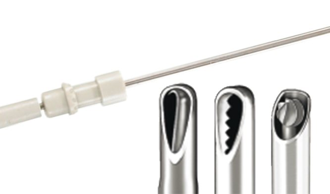

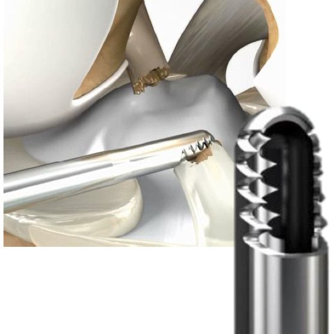
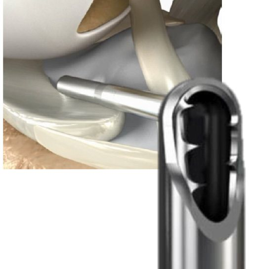
CrossBlade Series · Premium Cutters & Diamond Burs
Laser-cut shear angle · 20mm 눈금(Laser ruler) · 낮은 Clog · 감소한 Particle
- Stryker의 신규 제조시설에서 patented laser cutting으로 구현한 shear-angled cutting surface
- Particle generation 감소 · Cutter clogging 저항 증가
- Drive shaft·Hub 재설계 → 높은 토크에서 flexion 감소, 강성 증가, 진동 감소
- Distal housing에 20mm Laser Marking Ruler — 관절 내 거리 가늠

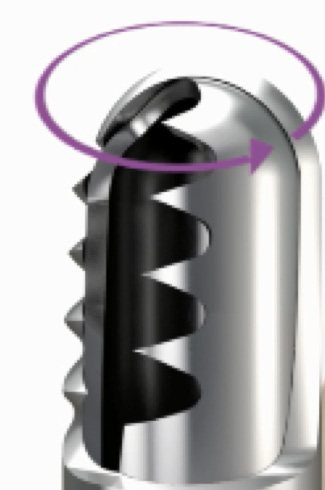
| CrossBlade (Premium, 5/box) | 3.5 | 4.0 | 5.0 | 5.5 | Specialized |
|---|---|---|---|---|---|
| Tomcat HC | — | 475-345-000 | 475-355-000 | — | Knee: ACL / ACL stump, scar tissue가 많은 환자 |
| Dual Edge | 475-331-000 | 475-341-000 | — | 475-361-000 | Shoulder: Rotator cuff · SAD (4.0/5.5), Labral repair·glenoid bony work (3.5), Knee: ACL stump · Notchplasty (5.5) |
| Aggressive Max | 475-337-000 | — | — | — | Knee: 큰 window로 ACL 정리, 매끈한 외부 하우징으로 Meniscus 보호 |
| Smooth Bite | 475-333-000 | — | — | — | Knee: Meniscus에 부드럽게, posterior compartment · Shoulder: Labral repair |
| Diamond Bur (XL) | — | 485-840-000 | — | 485-860-000 | Hip osteoplasty 등 — bone debridement 시 control 향상, hyaline cartilage 손상 위험 감소 설계 |
Cutter · Bur 선택 가이드 (Quick guide)
Stryker 브로셔의 "Specialized" 표기를 수술 상황별로 재정리 — 최종 선택은 술자 판단
| 수술 상황 (Situation) | 고려 제품 (Candidates) | 포인트 |
|---|---|---|
| Knee · Meniscus / Cartilage / Synovium | Aggressive Plus · Resector · Smooth Bite | 범용 → Aggressive Plus, 연골 보호 → Smooth Bite |
| Knee · ACL stump / Scar tissue | Tomcat · Tomcat HC · Aggressive Max | 빠른 연부조직 절제 · 큰 window |
| Shoulder · Subacromial Decompression / Notchplasty | Resector · Dual Edge (4.0/5.5) · 6-Flute Bur · Diamond Bur | Soft tissue + bone 겸용으로 Bur 교체 최소화 |
| Shoulder · Labral / Glenoid work | Dual Edge 3.5 · Smooth Bite · 6-Flute SLAP Bur | 작은 window · 정밀 작업 |
| Hip · Osteoplasty · Capsulotomy | Long Hip Cutters/Burs · CrossBlade Diamond Hip Bur · SERFAS XL (Hook · 50-S · 90-S) | Hip length (XL) 필수 — Scope 165mm와 함께 구성 |
| Small Joint · Wrist · Ankle · Elbow | Formula / TPS Small Joint Cutters · Hooded Abrasion Bur (2.0–3.5mm) | 1.9–2.7mm Scope, SERFAS Small Joint와 조합 |
| Microfracture | Subchondral Drill 1.5mm (375-832-000) | Formula Handpiece에 직접 연결 |
공식 자료: Integrated Arthroscopy Platform Brochure (PDF) · CrossFire 2 · CrossFlow · SERFAS · Formula